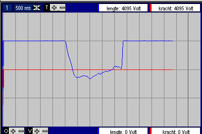
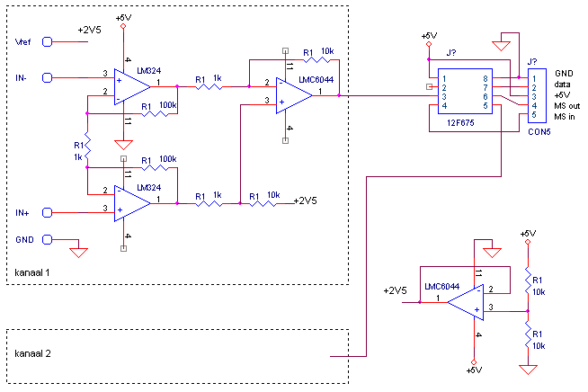

FysioFlex Simplex
Cheap & better !!
Specificaties:
maximaal 2 kanalen, universeel met brugspanning
echter met 1 extra PIC uitbreidbaar tot 256 kanalen
sample frequentie fixed at 100 Hz (maximum 1 kHz)
maximale throughput 100 kHz
maximale gevoeligheid 2 mVtt
USB connection
geen extra power supply nodig
Component prijs Euro 20 + USB-chip (los Euro 10, module Euro 25) + connectors ..
bij hoogste versterking is offset afregeling nodig
fysiek volume: lucifer doosje
medisch onveilig !!
Midac driver aanwezig
ongeveer 40 mmHg,
display fullscale, stripchart !

